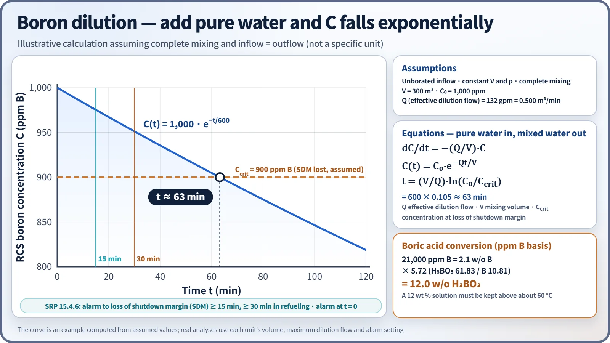
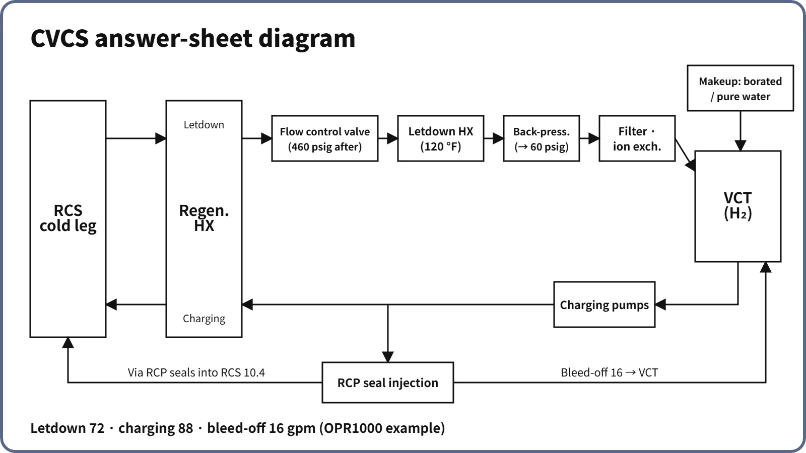

Systems & Equipment · C-SY-012
Chemical and Volume Control System (CVCS) — The RCS Auxiliary System That Handles Inventory, Boron and Water Chemistry Through Letdown and Charging
Letdown, purification and charging: the flow balance that holds pressurizer level, the VCT, boron control and the boron dilution event.
The chemical and volume control system (CVCS) is an auxiliary system that continuously draws off part of the RCS coolant (letdown), purifies and adjusts it, and returns it (charging), so as to manage the coolant inventory (pressurizer level), the boron concentration and the primary water chemistry. It also supplies RCP seal injection and pressurizer auxiliary spray.
Principle and mechanism
Functions and subsystems
For a typical PWR, the functions are as follows.
- Inventory control: adjust charging and letdown to follow the pressurizer level program. Let down excess coolant during startup and power increases, charge during shutdown and power reductions, and make up normal leakage.
- Boron concentration control: compensate for burnup, xenon and temperature changes and secure shutdown margin (boration and dilution).
- Water chemistry and purification: pH (LiOH), dissolved oxygen (hydrazine when cold, hydrogen at power), filtration and ion exchange.
- RCP seal injection: a fixed flow to each RCP seal (6.6 gpm per RCP in the APR1400 example); the controlled bleed-off is returned to the VCT.
- Pressurizer auxiliary spray: divert part of the charging flow when the RCPs are stopped and the differential pressure for normal spray is lost.
- Monitoring and other duties: boronometer, process radiation monitor (trend of cladding damage), pressurization for leak tests, purification of shutdown cooling flow, removal of noble gases through VCT venting.
The number of subsystems differs between references. Some references divide the system into four (letdown and charging / seal injection and auxiliary spray / makeup and boric acid makeup / boron recovery), others into seven (letdown, charging, seal water supply, chemical addition, makeup, boron recovery, boric acid makeup). When quoting a number of subsystems, state the basis of the division.
Flow path and pressure and temperature changes
![Typical CE-type CVCS flow path: letdown from the RCS cold leg at full RCS pressure and temperature through the regenerative heat exchanger, the flow control valve (pressure reduced), the letdown heat exchanger (cooled for the resin) and the back-pressure valve (low pressure), then filter and ion exchangers to the hydrogen-blanketed volume control tank; charging pumps return flow through the regenerative heat exchanger to the RCS, with a branch to RCP seal injection, part of which enters the RCS and the rest returns as bleed-off; with makeup tanks, blending tee, chemical addition, auxiliary spray, an image of the tank and pumps, and cards on VCT level interlocks and APR1400 values](../../assets/images/concepts/c-sy-012-cvcs/fig1-cvcs-flow-path.webp)
The job of the letdown system is to bring coolant at full RCS pressure and temperature down to the low pressure and temperature that the purification equipment (filters, ion-exchange resin) can tolerate. The sequence below is the typical CE-type (OPR1000) arrangement.
- RCS cold-leg letdown nozzle → letdown isolation valves
- Regenerative heat exchanger (tube side): gives heat to the charging water and cools the letdown. Preheating the charging water prevents thermal shock at the nozzle and the positive reactivity insertion of cold water.
- Letdown flow control valve: adjusts flow on a signal from the pressurizer level control system and reduces pressure.
- Letdown heat exchanger (component cooling water): cools the letdown to a temperature the ion-exchange resin can tolerate.
- Back-pressure control valve: holds the upstream pressure above the saturation pressure at the maximum letdown temperature (→ suppresses boiling in the heat exchanger and flashing at the valve); downstream pressure is low.
- Filter → purification ion exchanger (mixed bed) or deborating ion exchanger → spray into the top of the VCT.
- Charging pumps → regenerative heat exchanger (shell side) → RCS cold-leg charging nozzle, with branches to seal injection and auxiliary spray.
In the normal balance, charging flow equals the RCS charging flow plus the seal injection. Part of the seal injection enters the RCS through the seals and the rest returns to the VCT as controlled bleed-off. On the RCS side, charging plus seal in-leakage equals letdown, so pressurizer level stays constant; the letdown and the bleed-off together return to the VCT and are recharged.
Volume control tank (VCT)
The VCT is the surge tank that receives the letdown. It operates at low pressure and at the letdown temperature, and is designed for both internal pressure and external pressure (vacuum).
- Level buffer: the normal level band alone absorbs RCS expansion and contraction during power changes without automatic makeup, with margin left for pure water during dilution.
- Level interlocks: automatic makeup starts at the low end of the level band and stops at the high end; at high level, letdown bound for the VCT is diverted to the boron recovery system; at low-low level, charging suction transfers to the refueling water tank.
- Gas control: in operation a hydrogen cover gas keeps RCS dissolved hydrogen in the specified band (commonly 25–50 cc/kg in EPRI guidelines), suppressing oxidizing species from radiolysis; at shutdown the tank is purged with nitrogen; vent gas goes to the gaseous waste system.
- It provides suction head for the charging pumps, and its overpressure relief valve discharges to the equipment drain tank.
Boron control and the boric acid concentrator
For boration, highly borated water from the refueling water tank (or a boric acid storage tank) is used; for dilution, pure water from the reactor makeup water tank. They are mixed at a blending tee and sent to the VCT or the charging pump suction. There are four makeup modes: automatic, borate, dilute and manual. Near the end of the cycle, when the boron concentration is low, the amount of dilution water rises exponentially, so boron is removed directly with the deborating ion exchanger.
The boric acid concentrator heats recovered low-concentration borated water with auxiliary steam and evaporates it. The water leaves as vapor and is condensed (to the makeup water tank after anion exchange), while the boric acid, being essentially non-volatile, stays at the bottom as a concentrate. A degasifier upstream removes dissolved gases first.
As a worked conversion, a concentrate of 21,000 ppm (ppm B, by mass of solution) is 2.1 w/o B, which as boric acid is 2.1 × 5.72 ≈ 12.0 w/o H₃BO₃. The solubility of boric acid is about 4.5 wt % at 20 °C, so a 12 wt % solution must be kept above about 60 °C to prevent precipitation.

What it means in a plant
Design differences by reactor type
| Item | Westinghouse type | OPR1000 | APR1400 |
|---|---|---|---|
| Letdown control | Steps with letdown orifices | Fine control with a flow control valve | Orifices (stepped by isolation valves) + back-pressure control (400 psig) |
| Charging control | Centrifugal charging pumps + flow control valve (fine) | Reciprocating pumps, stepped by number running | Centrifugal charging pumps; charging set by level control |
| Boric acid source | Boric acid storage tank | Refueling water tank | Boric acid storage tank (BAST, renamed with the adoption of the IRWST) |
| Relation to safety injection | In many designs the centrifugal charging pumps double as high-pressure safety injection | Separate HPSI; charging pumps start on SIAS | Connection to the HPSI header removed; charging is non-safety |
An APR1400 normal-condition example is letdown 80 gpm, charging 93 gpm and seal injection 6.6 gpm per RCP (2010 design-analysis conference paper). The seal injection heat exchanger and the orifice-bypass preheating line were removed, and a letdown isolation valve inside containment was added. The auxiliary charging pump can be run on the alternate AC source during an SBO and was evaluated as a diverse means of RCP seal cooling.
Operation and safety
- Startup (cold): remove oxygen with hydrazine while the RCS is still cold → form the pressurizer steam bubble → add hydrogen to the VCT after the RCPs start → dilute before criticality.
- Shutdown: purge the VCT with nitrogen, borate to the cold-shutdown concentration, and depressurize with auxiliary spray after the RCPs stop.
- Lithium management: lithium builds up through B-10(n,α)Li-7 and is removed by the purification ion exchanger. Coordinated B–Li operation lowers lithium as boron decreases to keep the high-temperature pH constant.
- Water chemistry limits (old technical specification 3/4.4.7 structure): dissolved oxygen 0.10 ppm steady-state and 1.00 ppm transient (for Tavg above 250 °F); chloride and fluoride 0.15 and 1.50 ppm each. If a steady-state limit is exceeded for 24 hours or a transient limit is exceeded, the plant must be in hot standby within 6 hours and in cold shutdown within 30 hours. The concern is stress corrosion cracking of stainless steel (by chloride and fluoride, accelerated when oxygen is present).
Boron dilution event
A boron dilution event is one in which pure water enters at maximum flow because of a makeup control error or a valve failure. Assuming complete mixing and inflow equal to outflow, C(t) = C₀·exp(−Qt/V), and the time to reach the concentration at which shutdown margin is lost is t = (V/Q)·ln(C₀/Ccrit). With illustrative assumptions (unborated inflow, constant volume, complete mixing, constant density) of V = 300 m³, effective dilution flow Q = 132 gpm (0.500 m³/min), C₀ = 1,000 ppm and Ccrit = 900 ppm, t = 600 × 0.105 ≈ 63 minutes. If the alarm sounds at t = 0, this comfortably exceeds the 15-minute SRP criterion. The OPR1000 and APR1400 alert the operator with a boron dilution alarm that monitors a rise in startup-range neutron flux.
Regulatory and design criteria
The criteria below are examples from the United States (US NRC).
| Basis | Key point |
|---|---|
| GDC 14, 29, 33, 35; SRP 9.3.4 | Prevention of pressure-boundary corrosion (water chemistry); reactivity control in AOOs; makeup for small leaks; high-pressure ECCS injection (in dual-purpose designs) |
| 10 CFR 50.63; NUREG-0737 III.D.1.1 | SBO coping (seal injection and makeup); reduction of leakage outside containment, monitoring of demineralizer temperature and differential pressure |
| SRP 15.4.6 | Boron dilution: at least 30 minutes from alarm to loss of shutdown margin during refueling, 15 minutes otherwise |
Easily confused pairs
| CVCS charging | High-pressure safety injection (HPSI) | Shutdown cooling (SCS) | |
|---|---|---|---|
| Purpose | Inventory, boron, water chemistry | Core cooling in a LOCA | Decay heat removal at low temperature and pressure |
| Operation | Continuous | On demand (SIAS) | Second stage of cooldown |
| Class | Mostly non-safety | Safety class | Safety class |
Key points at a glance
- Definition: an auxiliary system that manages RCS inventory, boron concentration and water chemistry through letdown and charging.
- Functions: pressurizer level control, boration and dilution, pH (LiOH) and oxygen (H₂, N₂H₄) control, purification, RCP seal injection, auxiliary spray.
- Letdown: cold leg → regenerative HX → flow control valve (pressure reduction) → letdown HX (cooling) → back-pressure valve → filter and ion exchangers → VCT.
- Charging: VCT → charging pumps → regenerative HX → cold leg, with a seal injection branch.
- Balance: charging = RCS charging + seal injection; charging + seal in-leakage = letdown; bleed-off returns to the VCT.
- VCT: H₂ cover gas, N₂ purge, automatic makeup within the level band, diversion at high level, charging NPSH.
- Boric acid: factor 5.72; 21,000 ppm B = 12.0 w/o H₃BO₃; the concentrator separates water from boric acid by evaporation.
- APR1400: centrifugal charging pumps, BAST, HPSI connection removed.
- Safety: boron dilution 15/30 minutes; isolation valves (SIAS, CIAS).
